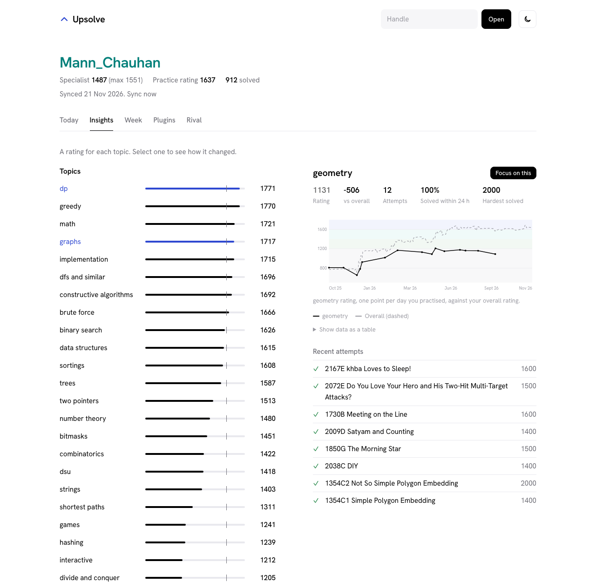
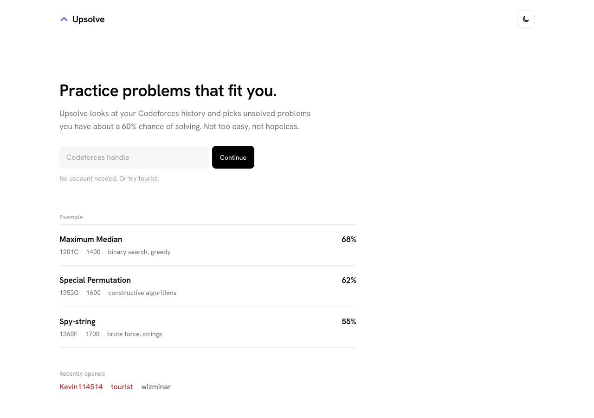
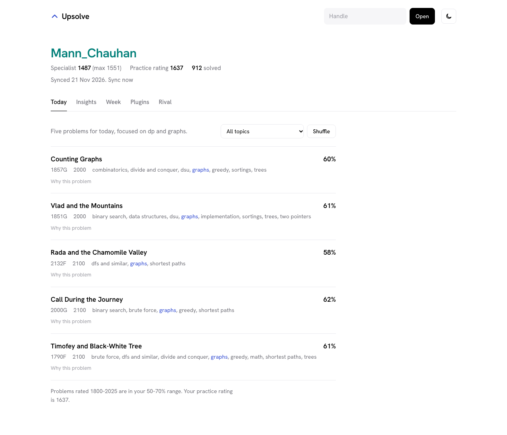
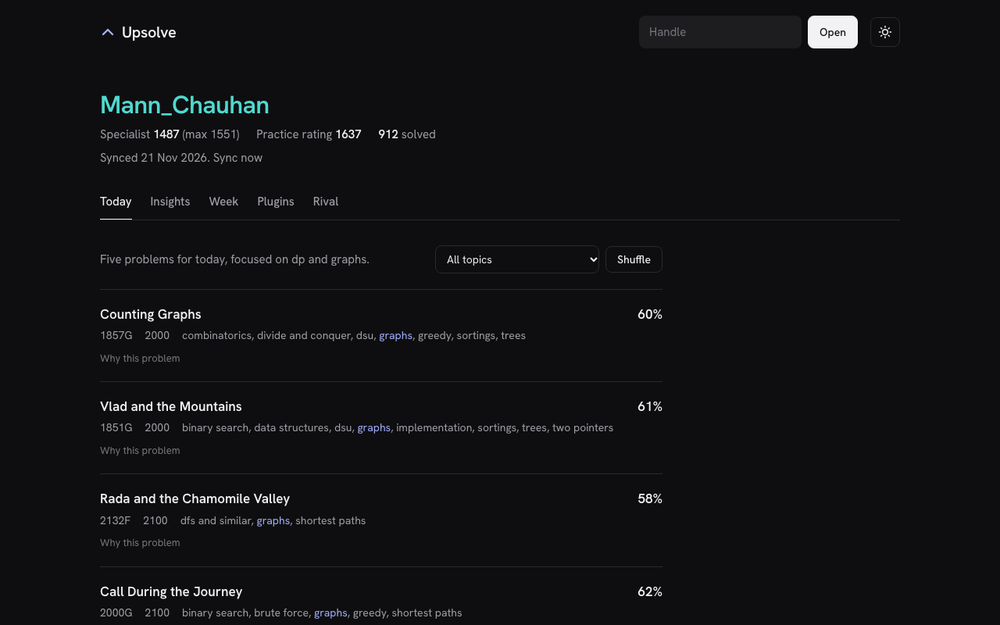

A Codeforces practice coach. Enter a public handle and Upsolve recommends unsolved problems you have about a 50–70% chance of solving, explains why, and tracks your progress by topic.
CS698B Course Project: Project Overview
Team: The Syndicate
| Ashirvad Dwivedi | 265005 |
| Mohit Shankar Pawar | 265021 |
| Chaitanya Kumar | 265009 |
| Bishal Podder | 265008 |
Live: https://upsolve.mohitupawar.com (also upsolve.wizminar.com)
Code: https://github.com/Wizminar/upsolve
API docs: https://upsolve.mohitupawar.com/api/docs
Competitive programmers waste time on problems that are either far too easy or hopelessly hard. Upsolve reads a user's public Codeforces history, works out how strong they are in each topic (dp, graphs, greedy and so on), and picks five unsolved problems per day that sit in their stretch zone: an estimated 50–70% chance of being solved. Each recommendation comes with written reasons.
The app has three connected views:
A fourth area, Plugins, lets other teams add their own pages and panels inside Upsolve (see section 7).
Codeforces API --> ETL (clean, group, store) --> SQLite database
|
v
Elo ratings per topic + logistic regression model
|
v
Recommender (five problems near a 60% chance, with reasons)
|
+-----------------------+------------------------+
v v
Website: Today, Insights, Week REST API + in-app plugin system
Everything runs as one Python process: FastAPI (web framework) served by Uvicorn (web server). It serves the website, answers API requests, and runs imports in background threads. Data lives in one SQLite file. The trained model is a small JSON file of weights.
| Layer | Tool | Why |
|---|---|---|
| Backend | Python 3.12, FastAPI, Uvicorn | Simple, typed endpoints; automatic OpenAPI docs |
| Storage | SQLite | One file, no database server needed |
| Machine learning | NumPy, scikit-learn | Train once offline; NumPy for fast predictions |
| Data source | Codeforces public API, via httpx | Free, no key; paced to 1 request / 2 s |
| Frontend | Plain HTML, CSS, JavaScript | No build step; hand-drawn SVG charts |
| Testing | pytest (28 tests) | Runs offline with synthetic data |
| Hosting | Render (free plan), custom domain | Public URL for the team and partner team |
When a user presses Sync, the server calls four Codeforces endpoints: user.info (profile), user.status (every submission), user.rating (contest history) and problemset.problems (about 11,500 problems with difficulty and tags). Codeforces allows roughly one request every two seconds, so the client paces itself and retries on errors.
*special tag are dropped.Everything is stored in SQLite (problems, users, submissions, attempts, contest ratings, topic ratings, training settings, recommendation log, sync jobs, plugin data). Later syncs are incremental: only submissions newer than the last stored one are fetched, and problem metadata is cached for 24 hours.
A script sampled 200 real users from recent rated rounds, 20 per 200-point rating band from 800 to 2800, and imported their full histories. The list is published in data/dataset_handles.csv so the dataset can be rebuilt.
Each attempt is treated like a chess game between the user and the problem, whose Codeforces difficulty is its rating. Solving raises the rating, failing lowers it. This runs for an overall rating and for every topic. Two corrections make it realistic:
For any problem the classifier predicts the chance of solving it from 11 features measured before the attempt: the Elo estimate, the gap between difficulty and overall rating, the gap to the weakest tag, tag evidence and solve rates, recent form, total experience, days since last practice, number of tags, difficulty, and whether it was a contest. Predictions are made in "seen in a contest" mode, which is the conservative choice.
Chronological split: trained on the oldest 80% of examples (145,793), tested on the newest 20% (36,449) that the model never saw.
If the model file is missing, the app falls back to Elo estimates automatically.
Every unsolved problem near the user's level is scored by closeness to 60%, training focus, weak topics, "upsolve" (tried before and failed) and recency, with at most two per topic and one per contest. Each pick gets written reasons, for example "Rated 1900, 263 above your practice rating" or "Builds a weaker topic: graphs". Shown recommendations are logged, so later syncs can compare predicted chances with what the user actually solved.





/text/<handle> for text browsers.
Upsolve is a web app with no login. A user enters a handle, the app imports it (progress is shown live), and the three views become available. Users can pick up to two focus topics and a weekly target; progress updates from accepted submissions after each sync. The site is deployed on Render's free plan at upsolve.mohitupawar.com and also runs locally with one command:
pip install -r requirements.txt uvicorn app.main:app --port 8000
Free-plan note: the hosted instance sleeps after ~15 idle minutes (first visit then takes ~50 s) and its database resets on restart, so handles may need re-syncing. The trained model is part of the code and is never lost.
Versioned under /api/v1, documented automatically in OpenAPI 3 (interactive at /api/docs, exported to docs/openapi.json).
| Method | Path | Purpose |
|---|---|---|
| POST / GET | /users/{handle}/sync | Start an import / check its status |
| GET | /users/{handle}/profile | Ratings, counts, model in use |
| GET | /users/{handle}/topics | Topic ratings with evidence |
| GET | /users/{handle}/topics/{tag}/history | Daily topic rating trend |
| GET | /users/{handle}/rating-history, /activity, /attempts | Contest history, daily activity, attempts |
| GET | /users/{handle}/recommendations | Daily problems with reasons |
| GET | /users/{handle}/predict/{problem_id} | Chance for one problem, with feature contributions |
| GET / PUT | /users/{handle}/training | Focus topics (max 2) and weekly target |
| GET | /users/{handle}/plan, /feedback | Weekly plan; how past recommendations turned out |
| GET | /topics, /problems, /model, /health | Catalogue and model report |
| GET / PUT | /plugins, /plugins/{id} | Installed plugins; switch on or off |
| GET / PUT / DELETE | /plugins/{id}/store/{scope}/{key} | Per-plugin JSON storage |

The course asks that cross-dev work run inside the base app rather than as a separate app. Upsolve therefore loads plugins into its own page:
plugins/ with a manifest.json and one JavaScript module.The full guide for the partner team is the separate document Upsolve Plugin Guide.


28 automated tests (pytest) run offline with synthetic Codeforces data. They cover:
| What | Used for |
|---|---|
| Codeforces API | All problem, submission and rating data (free public API, not open source) |
| FastAPI, Starlette, Pydantic, Uvicorn | Web framework, validation, server |
| httpx | Calling the Codeforces API |
| NumPy, scikit-learn | Predictions; fitting the logistic regression |
| SQLite | Storage |
| pytest | Testing |
| Hanken Grotesk (Google Fonts) | Typeface |
| Render | Hosting (free plan) |
Our own work: the ETL rules, the anchored Elo variant with implicit failures, the feature design, training and evaluation, the recommender, the charts, the website and the plugin system.
app/ FastAPI server: ETL, Elo, model, recommender, API, plugin registry static/ Website: HTML, CSS, JavaScript views and charts plugins/ Installed plugins (rival/ is the example) scripts/ Build dataset, train model, export OpenAPI tests/ 28 pytest tests data/ model.json (trained weights), dataset_handles.csv docs/ PLUGINS.md, openapi.json, these documents